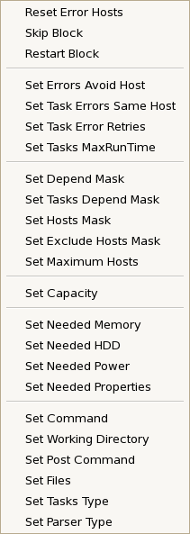
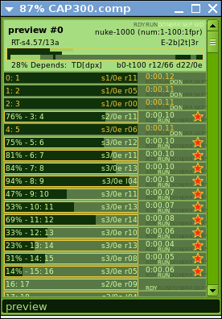
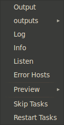

|
|
|
|
Mouse double click on a job in jobs list will open its tasks window.
|
Block RMB Menu  |
 |
Block Tooltip |
Edit any Block editable attribute. Skip or restart all block tasks.
|
Task RMB Menu  |
 |
Task Tooltip Task Information window  Double click task to open it. |
★ signs a running task.
Running task: 18% - Render progress = 18 percents.
Running multi-frame task: - f5/1-90% - 90% of frame 1 of 5 (frames per host parameter) rendered.
9: 45-49 - Task number-'9' and name-'45-49' (automatically generated by block).
s2/0e r10-1
Task has been started 2 times and has 0 errors (failed sessions).
Last start was on render named 'r10-1'.
Output - Request task output from server (from last launch, or current if it is running).
outputs - Choose task launch (session number) to request task output from.
Log - Request task log from server.
Listen - Request receiving output from render.
Error Hosts - Request task error hosts list.
Preview - Choose a program to launch (see watch configuration to edit this programs list).
Skip - Skip task. Server will stop task if it is running.
Restart - Restart task.

|
|

|